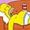

De: La Frikipedia, la enciclopedia extremadamente seria.
De: La Frikipedia, la enciclopedia extremadamente seria. De: La Frikipedia, la enciclopedia extremadamente seria.
| De la serie Lugares y sitios: | |||
| Taberna de Moe | |||
| |||
| Sector de actividad | Venta de bebidas alcohólicas y Flameado de Moe | ||
| Público objetivo | Moe Szyslak | ||
| Localizado en | Springfield | ||
| Regentado por | Homer Simpson | ||
| Nombres típicos | Bar de Moe | ||
| Decoración habitual | La puedes apreciar en la afoto | ||
| Actividades comunes | Tomar cerveza Duff, hablar con Moe | ||
| ¿Es rentable? | Sí, pese a que solo cinco personas lo visitan. | ||
| Nunca verás aquí... | Mujeres | ||
| Nivel de frikismo | Alto | ||
El bar de Moe es el mejor bar de Springfield, junto con el bar "Ellas y Ellas" de lesbianas que se encuentra enfrente y "La Caja Negra" un bar de pilotos de avión. Su dueño es Moe Szyslak un sueco de unos 40 años de edad nacionalizado estadounidense.
Antes conocido como Caverna de Moe, en el transcurren acontecimientos notables, cómo cuando Ralph Wiggum fue postulado presidente, o cuando Homer quiso trabajar en la comisión de basura de Springfield.
Se supone que queda algo lejos de la casa de Homer, pero en un episodio se ve a la familia Simpson desde la taberna, lo que hace suponer que se encuentra a 1 ó 2 manzanas de distancia, sin embargo se concuerda en suponer que como Homer siempre llega a la taberna en coche, la misma se encuentra algo lejos de su casa, específicamente sobre la calle Wualnut. La taberna cierra los miércoles, ya que ese día Moe lee a los desamparados, según información del episodio Homer Loves Flanders. Se deduce que el teléfono de la taberna es 7648-4377, según un episodio en el cual el Señor Burns marca éstos números en su teléfono, con la intención de llamar a Smithers, y contesta Moe. Las letras S M I T H E R S, coinciden en el teclado del teléfono 7 6 4 8 4 3 7 7.
En la película de Los Simpsons, la taberna está al lado de la iglesia de Springfield, en la escena en la que la cúpula está acechando al pueblo, los que están dentro del bar de Moe se dirigen hacia la iglesia y los que están en la iglesia se dirigen hacia el bar de Moe.
Aunque en la mayoría de los capítulos el baño en la taberna aparece dentro del edificio, en el episodio Mommie Beerest el baño se muestra en la azotea, con un gran hueco en el techo y una escalera para subir.
Si el bar funciona es gracias a un grupito de borrachuzos de poca monta que no serían admitidos en ningún otro establecimiento, quienes con su consumo desmedido de cerveza hacen que el negocio sea rentable:
En el bar de Moe principalmente se vende solo cerveza Duff, aunque también es un lugar de putas reunión, peleas de boxeo, de gallos, de rodeo sobre Barney, de separación de parejas, de armar revoluciones, discusión, depresión, refugio contra el ejercito de salvación, entre otras.
|  The Simpsons |
|---|
| Personajes |
| Homer · Marge · Bart · Lisa · Maggie |
| Apu | Cletus | Comedido | Disco Stu | Dr. Nick Riviera | Duffman | Hank Scorpio | Hans Topo | La loca de los gatos | Lionel Hutz | Milhouse | Moe | Ned Flanders | Nelson Muntz | Profesor Frink | Ralph Wiggum | Señor Burns | Seymour Skinner | Spidercerdo |
| Otros |
| Barra Inanimada de Cabrono | Cerveza Duff | Flameado de Moe | Frases célebres de Homer | Frinkaedro | Homerianismo | Las mejores frases de Bart Simpson | Patetismo | Springfield | Taberna de Moe |
Autor(es):